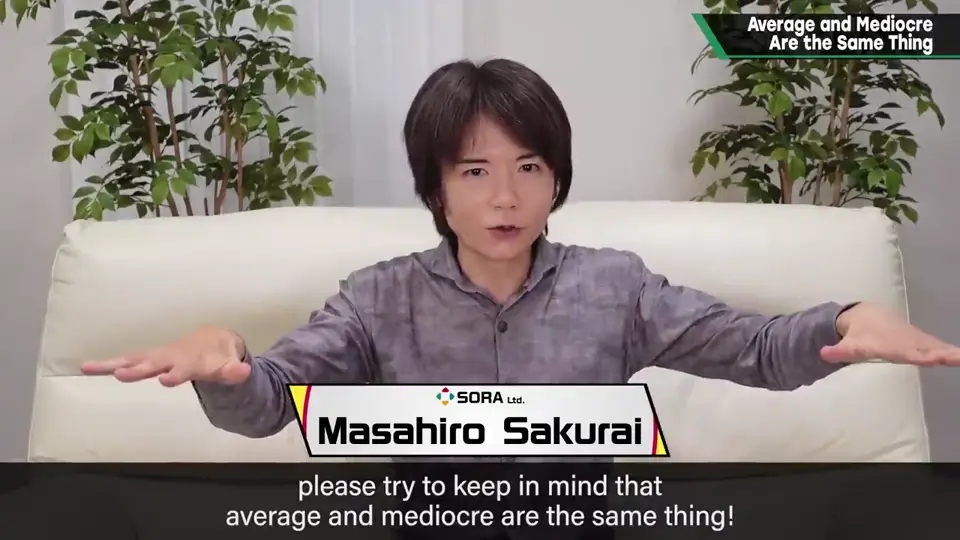
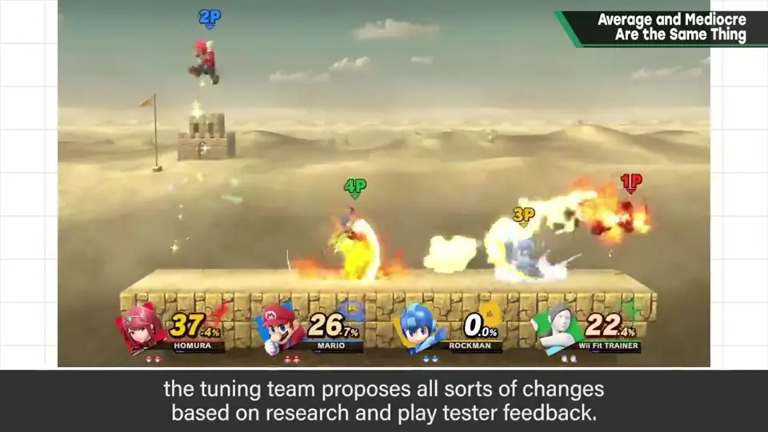
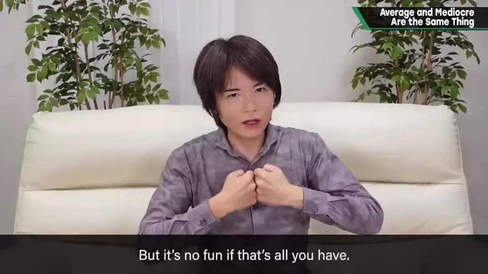
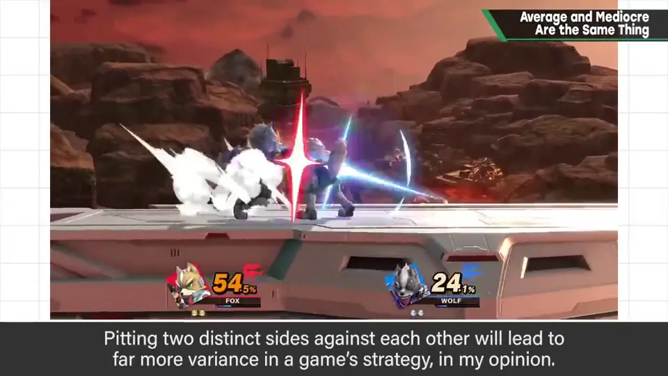
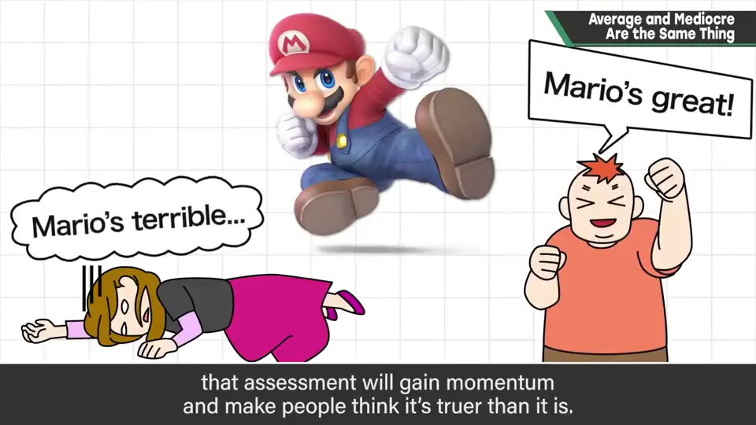
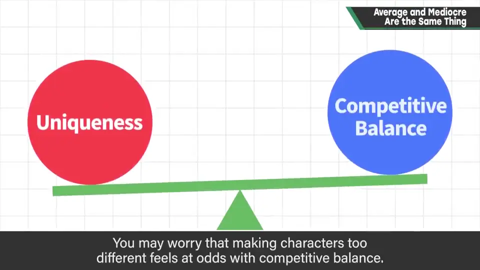
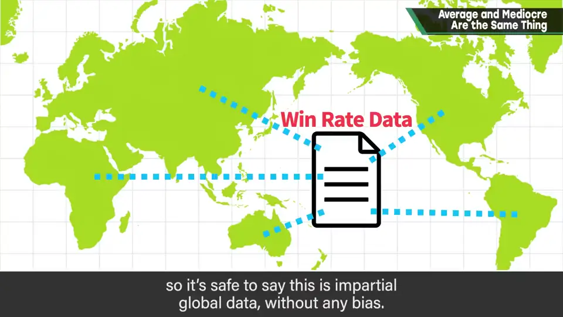
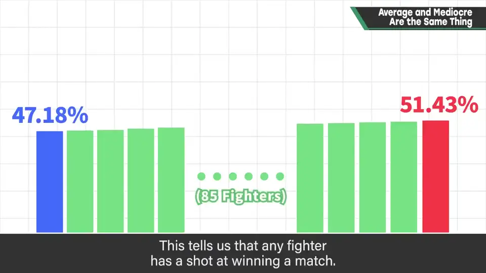

速览
无论规格还是参数调整，樱井希望大家记住：平均和平庸是同一回事。《大乱斗》的平衡调整中，调整组会根据各种调研和测试试玩提出各种调整案；但如果只盯着强弱平衡，性能会越来越平均：短处被补上、长处被削掉——这最无趣，很头疼。所以他监修时会朝「有长处就把短处加大」等不扼杀个性的方向调整。极端地说，全改成马力欧对马力欧，平衡就毫无问题，但这样只是无趣。游戏是博弈（push and pull）：完全相同的东西相撞也有博弈，但有限度；让不同的东西相撞，能激发多样的博弈。以性能尖锐为好，当然会毁誉参半；网上容易出现回音室效应，一旦有人说某角色强或弱，评价会加速，被认为比实际更强或更弱。但各人价值观的不同带来选择的不同、增加深度；那些说法对不对，就到实战中见分晓。没有个性的话，有那么多斗士也没意义：新斗士参战之所以受欢迎，一大原因是个性与角色性都立得住。没有弱点也没有强项，就不会有魅力。他希望同样做平衡调整的人，做出有张有弛、角色鲜明的东西。补充：想把个性拉大，大家可能觉得和对战平衡不合，所以他分享了《大乱斗 特别版》线上对战的胜率数据——来自各地的真实数据，可谓不含任何人偏见的世界最公平数据。细节保密，但给出参考：全斗士中最高胜率 51.43%，最低 47.18%，87 种斗士以平滑的渐变全部落在这个窄区间里，说明哪个斗士都有胜算；要再改变反而很难。胜率并非一切，每个人的感受才最正确，他明知冒昧仍作了分享。
1. 平均化的陷阱 0:04


《大乱斗》的平衡调整中，调整组会根据各种调研和测试试玩，提出各种调整方案。
但如果只看强弱平衡，性能就会不断被平均化：短处被弥补，长处被削掉。这最无趣，所以很困扰。
因此樱井监修时，会采取「有长处的就把短处加大」等方向，不扼杀个性。
2. 不同的东西碰撞，博弈才丰富 0:46
极端地说，全部变成马力欧对马力欧，平衡上就毫无问题了——但这样只是无趣。


游戏是博弈。完全相同的东西碰撞也会产生博弈，但有限度；让不同的东西互相碰撞，能引发多种多样的博弈，所以更好。
3. 毁誉参半与回音室 1:18
以性能尖锐为好，当然会毁誉参半。网上容易出现回音室效应：一旦开始有人说某个角色强或弱，评价就会加速，被认为比实际更强或更弱。

但各自价值观的不同带来选择的不同，增加了深度。那些说法对不对，就到实战中见分晓吧。
4. 没有个性就没有魅力 1:44
如果没有个性，有很多斗士也没有意义。新斗士参战受欢迎，很大原因在于个性和角色性都确实立住了。
5. 补充：线上胜率数据 2:18
想把个性拉大，大家可能会觉得这和对战平衡相冲突。

所以樱井分享了《大乱斗 特别版》线上对战的胜率数据：来自各地汇集的真实数据，可以说是不含任何人偏见的世界上最公平的数据。细节保密，但给出参考数字。


他并不认为胜率就是一切，每个人的感受才最正确；明知冒昧，还是分享出来。
自测题
1. 为什么只看强弱调平衡会出问题？
性能会被平均化：短处补上、长处削掉，最后变得平庸无趣。 0:20
2. 樱井监修时采用什么方向？
不扼杀个性，例如有长处的就把短处加大。 0:40
3. 《大乱斗 SP》线上胜率的最高和最低是多少？
最高 51.43%，最低 47.18%，87 名斗士都在这个范围内。 2:48